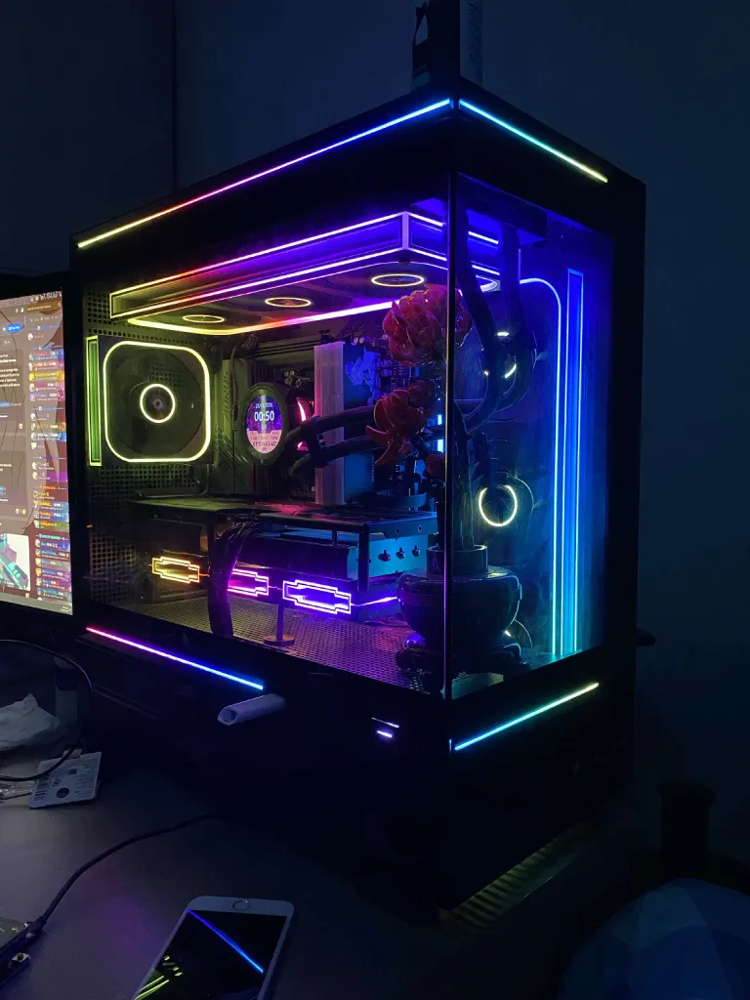

jeffra
yet another victim of gifted boy -> burnt out queer pipeline
i coded this website on a thinkpad running linux (mint because im a larper)
adhd + you can tell im autistic i made a website instead of a strawpage
i <3 vibe coding
rawr uwu xd

main (home) setup
my pc
CPU: 9900x
Ryzen 9 9900x
chose this over a 9800x3d half because beamng likes cores over cache and half because i wanted to be different
aurafarming with a ryzen 9 box on my shelf
Cooler: 360mm AIO w/ LCD
Thermalright Core Vision ARGB 360
bought new from scorptec for 120 bc i dont trust used aios
not a fan of the usb-c cable that powers the lcd its so ugly
cooler itself is pretty good, keeps my 9900x at around 80 degrees at ~130w
Motherboard: Aorus B650 MATX
Gigabyte B650M Aorus Elite AX (rev 1.1)
bought in japan
good 12 phase vrms or whatever, works fine
one of two parts that has remained the same since i first built this pc
RAM: 32GB DDR5
2x16 Corsair Vengeance DDR5-6000 CL30-36-36-76
bought for $75 outside of a woolies metro near olympic park in sep 2025
i used to have 64gb and i miss those days
its actually not stable at 6000mhz i think thats why it was so cheap when i got it
the stock heatsinks have been replaced with rgb heatsinks + two dummy heatsinks attached to printed ram
Storage: 1TB NVMe + 512GB HDD
1TB PNY CS2140 + 512GB Hitachi Travelstar Z7K500
nvme i bought in japan, hdd i got off a free pc in dee why, currently used to store recording of gd/phighting
the hdd cage in my case highkey sucks ass so its so cooked
GPU: 9070 XT
Sapphire Pulse RX 9070 XT
bought in janpara akihabara for like 664 aud
its been deshrouded with aliexpress fans for about a 5 degree reduction in hotspot temps under gaming load (80 -> 75)
Case: Thermalright TL-M10
Thermalright TL-M10 non Vision
this shit so peak bruh
was considering the thermaltake view 170 but this popped up for like the same price and the rgb looks sick
cna we keep this niche this is too peak to allow to go mainstream
thermalright says it supports 360mm gpus but it should support like 410mm physically
PSU: 80+ Gold 850W
XPG Core Reactor II 850W
chose this bc it was the best balance of cheap + good + small size (for case)
no issues, idk why i didnt get an sfx instead
Fans: Thermaltake Single-Frame Fans
highkey dont know the model its all in chinese
big fan (heh) of the looks, better than the jonsbo single-frame fans, i love how the infinity mirrors are on every side
bought in china, i think it was like $50 (275 yuan) for 1x reverse 360mm 1x standard 360mm 1x standard 120mm
ill probably buy arctic p12 reverses to put at the bottom for extra intake
peripherals
Monitor: 27" 4K 240hz QD-OLED
Philips Evnia 27M2N8800
blew more than my 9070 xt on this ($800)
i think i got a decent deal for it being brand new and everything
Monitor: 27" 4k 60hz TN
Acer XK280HK
was my first 4k, only paid $50 and got it from just opposite carramar station at like 7pm or something
only 60hz and its tn but for $50 its a pretty good deal
it being 28" is really annoying because its slightly larger than my main
Monitor: 27" 4k 60hz TN
AOC U2879VF
got for free in epping and i can see why, its pretty fucked
it uses the same panel as the acer so its still fine as a secondary/tertiary tho
Keyboard: Hall Effect 68%
E-Yooso HZ-68
my uncle bought it for me in japan from hard-off (real store name)
it doesnt work with the software so its just a linear mechanical keyboard for now
Mouse: G Pro Superlight
Logitech G Pro X Superlight
bought this from exs brother thanks brandon
idk good mouse
tried to switch to a g502 wireless but that was dogshit (not the mouses fault just a bad sample)
Headset: G435
Logitech G435 Wireless
i paid $20 in front of the woolies next to like bexley north station or something idk
speaker quality itself is highkirkenuinely dogshit but functionally its nice
sim rig
Wheel: G29 + Pedals + Shifter
Logitech G29
originally got a g920 from canberra but g29 had more buttons so i went to parramatta to trade them
works eh, the drive mode selector double clicks most of the time :/
VR: Quest 2
Oculus Quest 2 (idk storage)
went up to warriewood near the flower power for it, paid $100 to get barked at by a dog
left controller was fucked, good thing i use my right hand for vrchat e-sex with the cairns polycule
pcpartpicker list
pc:

secondary sff/travel setup
the pc
CPU: 3100
Ryzen 3 3100
i have 2 and both were free so idk where i got it from, either balgowlah or parramatta
prob will get a 5800xt if possible
Cooler: Thermalright 47mm Full Copper
Thermalright AXP-90 X47 Full Copper
think i got it from amazon
stock fan has been replaced with a 120mm for vrm cooling + noise
Motherboard: Chinesium B350 ITX
Jginyue B350i Plus ARGB
$50 somewhere in like the west it was near a train station
works well i snapped off one of the argb pins accidentally
RAM: 16GB DDR4
2x8 G.Skill TridentZ Neo 2400 CL15 RGB
$60, theyre actually mismatched 1x8 kits but i don't care because its not my main pc
Storage: 512GB SSD
sk hynix i think
came from my laptop
GPU: GTX 1650
Zotac Gaming GeForce GTX 1650 OC GDDR6
originally i had a 1650 for free from somewhere in the west
but then i dropped that 1650 and it started artifacting so i convinced my dad to buy me another one for $80 :sob:
oh well its mine now
Case: Custom 3D-printed
custom designed and printed the case
pretty nice idk
im so bad at modeling theres holes in the print bc of the hsitty model
PSU: TFX 300W
Silverstone SST-TX300 80+ Bronze
kinda pricey at like $80 but its tfx who gaf
idk works fine its a psu
Fans: 2x Thermalright TL-E12B-S
took from my main pcs aio
works fine, rgb is nice and bright if a bit ugly
peripherals
Monitor: 15" 1080p 84hz IPS
amazon special
runs off of usb power alone, so nice to be able to run everything off one wall plug2
it is 84hz specifically because i overclocked it and it cant run 85hz
Keyboard: Razer Blackwidow 2019
Razer Blackwidow 2019 (Green Switches)
was free in beacon hill so was a bit of a trek
rgb on w key is borked but otherwise works
Mouse: G502 Wireless
Logitech G502 Lightspeed
bought for $50 in wangi wangi up north
originally used as a main but it kinda double clicked so its been discarded to the spare pc
hasnt double clicked, maybe ill start maining it
Earbuds: Technics AZ-100
Technics EAH-AZ100
my grandpa bought it for me w grandpa
noise cancelling isnt as good as my sony xm4s but sounds a bit nicer
pcpartpicker list
no photo as im still working on it
games i play
mcsr ranked (minecraft speedrunning ranked)
im such a chuddy trendhopper i just play bc rekraps videos were coolmy profile
phighting (this is a dropdown)
level 600-something bio onetrick
i dont play anymore because this game fills me with hatred every time
i have a spreadsheet
biograft guide
beamng.drive i love beamng so much
cities skylines 2
cyberpunk 2077
other interests
dragons
my fursona is a dragon (thank you @7nfiniti on discord)

dragons are so cool because you can draw them as being super scary and scaly but also really cute and fluffy
facebook marketplace
i LOVE facebook marketplace
like 99% of my setup is from fb marketplace
if you asked me where i got an item in my setup from i could probably tell you the general time and location
messing about with pc hardware
cars
fun fact i took the background photo myself, theres an enzo to the left
this website was really fun to make my gender has been transed